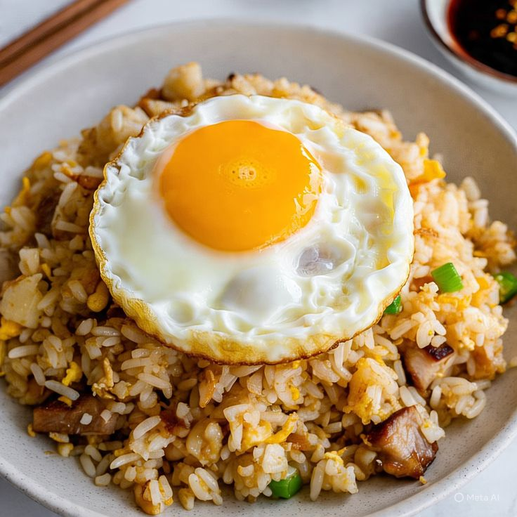

back
Nasi Goreng

Nasi goreng is a rice dish that is cooked in a wok or frying pan and mixed with seasonings such as salt, garlic, shallots, pepper, spices, sauces, and sweet soy sauce. These ingredients give the dish its distinctive and delicious flavor.
Ingredients:
- 2 plates of cooked white rice
- 2 cloves garlic, minced
- 3 shallots, thinly sliced
- 1 egg
- 1 green onion, sliced
- 1 tablespoon sweet soy sauce
- 1 tablespoon chili sauce
- 1/2 teaspoon salt
- 1/4 teaspoon black
Tools:
- frying pan
- Spatula
- Knife
- Cutting board
- Small bowl
Steps:
- Heat the cooking oil in a wok or frying pan over medium heat.
- Sauté the garlic and shallots until fragrant.
- Crack the egg into the pan and scramble it until fully cooked.
- Add the cooked rice and stir well to combine with the other ingredients.
- Add the sweet soy sauce, chili sauce, salt, and pepper. Stir until evenly mixed.
- Add the sliced green onions and cook for another minute.
- Remove from heat and serve while hot.